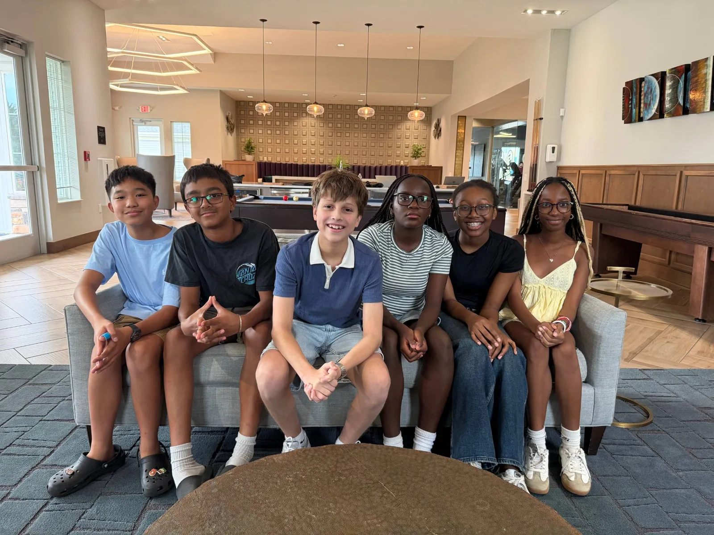
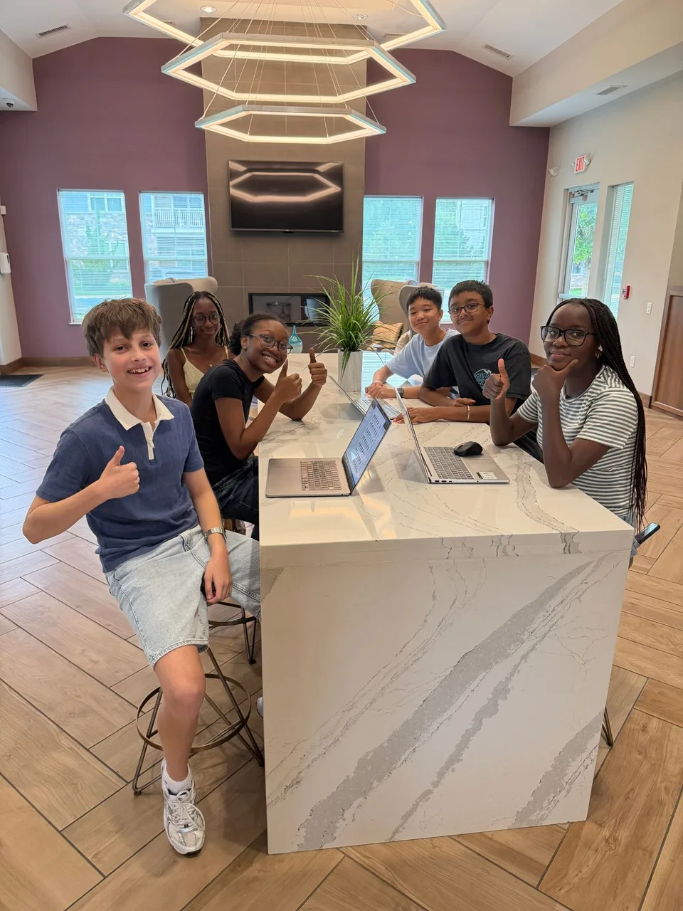

Algebridge is a free Algebra 1 course built by students: thirteen units, forty-six skills, practice that explains what went wrong, and a study helper that keeps the thinking yours.
Free and ad-free. The first skill is open right here, live from the platform.
Algebra 1 is the year math stops being arithmetic and starts being a language. Everything after it is built on that year.

Every skill on Algebridge follows the same steps: a short video, the key idea, practice, feedback, and review. The window above is the key idea and the practice. The three steps that make the difference are below, running live.
Problems come from a generator, so the numbers change every time and there is always one more. Five right answers on the first try finish a skill. Try three.
When an answer is wrong, the platform reads it for the mistake behind it and says so in plain words, without giving the answer away. After two tries it offers the worked steps. This one opens on a wrong answer: fix it.
A finished skill comes back for a quick check after 1, 3, 7, 14 and 30 days, so what a student learned in September is still there in March. Open a skill that is due and clear it.
Archie sits beside every lesson. He can give a hint, the first step, the key idea, a similar example, or check the student's own work. He is built to refuse to give the final answer, and the rule is enforced in code, so it holds when a student asks nicely and when they ask twice.
Below he is open on a live problem. Ask him something.
How the refusal works, on the For schools pageEvery skill has a video, a key idea, practice that regenerates, and feedback the moment an answer goes wrong. 42 of the 46 skills map to 36 Common Core codes, and the map is public.
Each of you is asking a different question. Short answers here, and a page for each that goes further.
Start at Unit 1, or pass Show what you know, three in a row, to skip a skill you already have. Five right on the first try finishes a skill; a wrong one gets a note about the mistake, and Archie is a click away. Word problems can be set in your own sport or hobby. Progress saves to your account and follows you to any computer or phone.
Create a free accountAlgebridge is free, shows no ads, and sells no data. A student can message only a tutor, teacher or Algebridge admin, and the app screens messages for personal information before they send. Video calls are started by tutors or admins, can be declined, and stay unrecorded. Every message, call and profile has Report and Block. Archie refuses to give final answers, so the homework stays theirs.
Read the safety page PrivacyClasses with six-character join codes, rosters, and assignments with due dates, with progress by student as they work. 42 of the 46 skills are mapped to 36 Common Core codes, and the map is public. School mode turns off chat, calls and games for every account at a school. The For schools page prints as a handout for the person who has to say yes.
For schools The standards map173 topics from Pre-Algebra through Algebra 2, each explained twice, once plainly and once in depth, with a worked example, the mistakes people make, and a video. One depth is where students give up; two is where they keep going.
Browse the directoryA student-led initiative founded in 2026, run by people who are still in the room where the problem happens.

Founded Algebridge in 2026 to help every student cross the Algebra 1 bridge with confidence.
Leads the tutoring program, breaking tough problems down step by step and building lasting problem-solving habits.
Works one-on-one with students, turning confusing Algebra 1 topics into clear, confident steps.
Manages the budget and funding so our free tools and tutoring keep reaching more students.
Leads marketing and outreach, getting Algebridge in front of the students who need it most.
Runs the social accounts, turning what Algebridge builds into posts students actually see.
Keeps everything running behind the scenes, coordinating programs, scheduling, and day-to-day operations.
Creates the videos and explainers that make Algebra 1 click for students outside the classroom.
For people who want Algebra 1 to stop being the wall it is today.
The things parents and teachers ask first, with the page that backs each answer.
Yes. Every unit and skill, the games, the tutors and the directory. Algebridge shows no ads and sells no data. It is a student-led initiative, and it stays free.
Students on the Algebridge team. Tutor and teacher accounts are opened with an access code from Algebridge, and the database limits who a student can reach: a tutor, a teacher or an Algebridge admin, never another student. Calls are started by tutors or admins, ring only while the student is online, can be declined, and stay unrecorded.
Safety & Trust lists the rules in full, including the ones still in progress.
The app screens every message for phone numbers, addresses, social handles, outside links and requests for secrecy before it sends. Every message, call and profile has Report and Block. A message to Archie that sounds like a student is in danger gets a calm card with 988 and Crisis Text Line, and goes to no AI service.
The safety page says exactly what is enforced today and what is still being built, so you can judge for yourself.
Thirteen units cover Algebra 1 from units and equations through quadratics and absolute value. 42 of the 46 skills map to 36 Common Core codes; the standards map is public and names the graphing standards still to come. A teacher can assign a unit or a single skill with a due date.
He refuses to give the final answer. The rule is enforced in code: the answer to the problem on screen is checked against every reply before it reaches the student. He gives a hint, the first step, the key idea, a similar example, or a check of the student's own work.
Yes. School mode turns off direct messages, group chats, video calls, the tutor directory, the leaderboard and the games for every account at a school, and leaves lessons, practice and Archie on. The For schools page lists exactly what the switch does and prints as a handout.
Start today. Algebridge is free, it stays free, and every unit of Algebra 1 is already waiting.